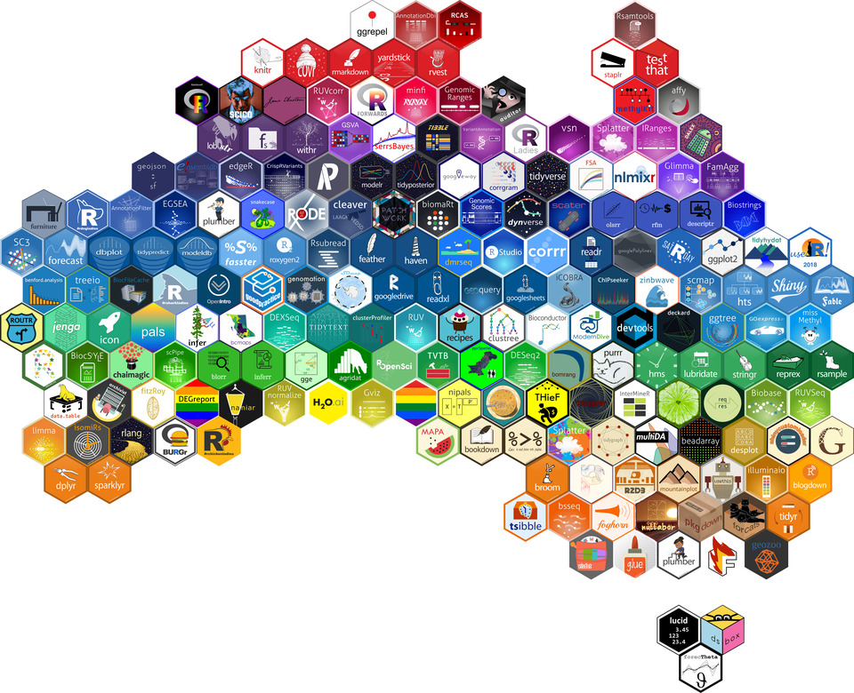
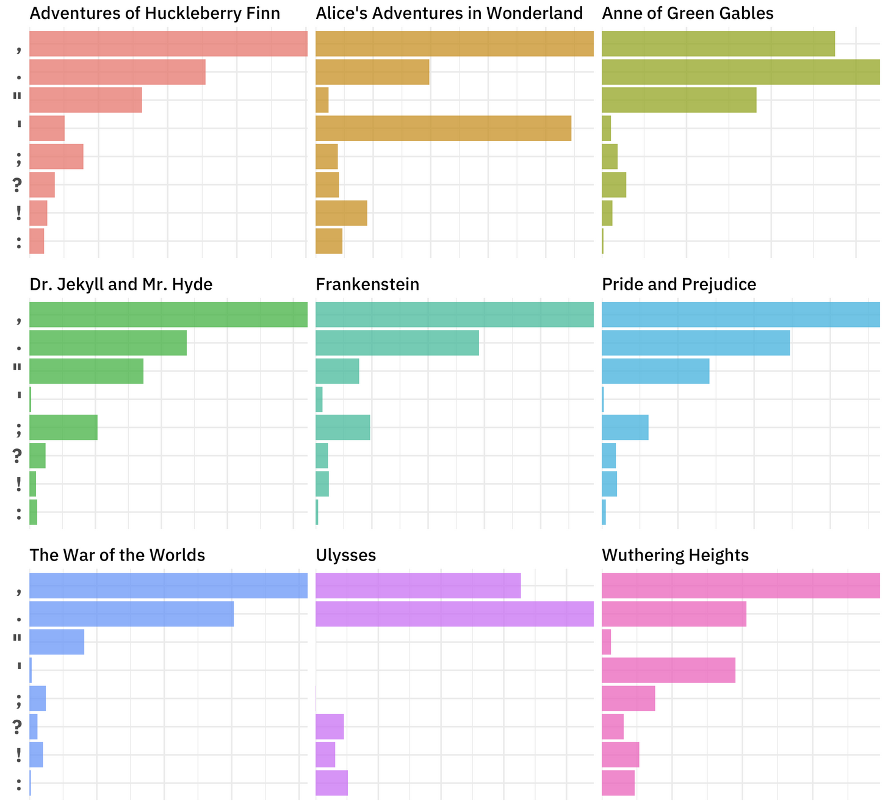
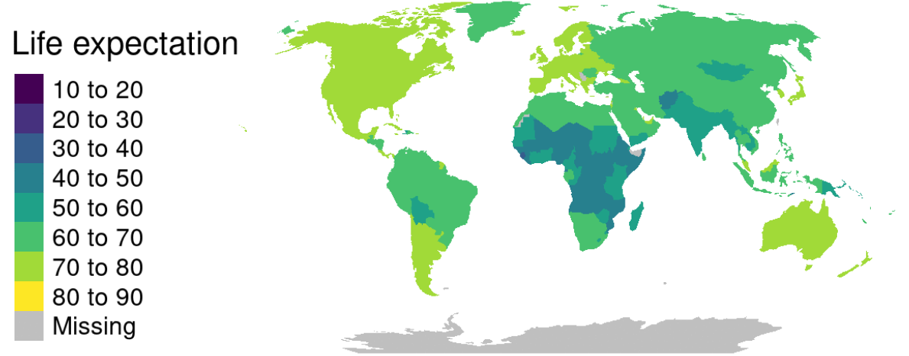
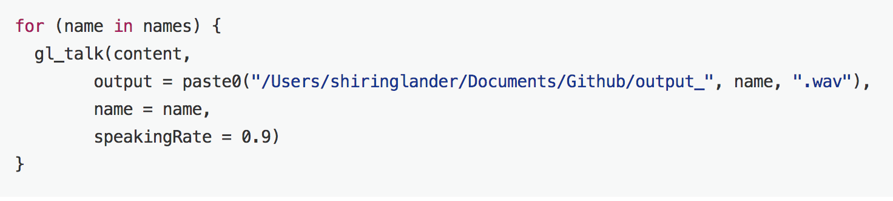

Jul 17, 2018
rOpenSci HQ
The rOpenSci team will be at a number of upcoming events.
- Jul 25-27, New York, NY, Stefanie Butland, Handbook hackathon - Open Source Alliance for Open Scholarship
- Jul 28 - Aug 2, Vancouver, CA, Scott Chamberlain & Jenny Bryan, Joint Statistical Meetings (JSM)
Software 📦
CRAN:  GitHub:
GitHub: 
New packages
- A new version (
v0.2.7) ofweathercanis on CRAN - . Check out the docs to get started. It just completed our software review process and is now in the rOpenSci family - welcome Steffi!

Releases
- A new version (
v1.0.1) ofavailableis on CRAN - check if the title of a package is available, appropriate and interesting. Check out the available README to get started.
remove self from results :)
- A new version (
v0.22.1) ofgit2ris on CRAN - an interface to the libgit2 library, a pure C implementation of the Git core methods. See the release notes for changes. Check out the git2r README to get started.
changed from S4 to S3 classes; a number of new functions; update libgit2 lib
- A new version (
v0.6.0) ofcrulis on CRAN - an R6 based HTTP client for R made for developers. See the release notes for changes. Check out the crul docs to get started.
simple auth now in async requests; new fxn ok(); progress bar support; new vign; global curl options
- A new version (
v2.2) oftesseractis on CRAN - bindings to Tesseract, an OCR engine https://opensource.google.com/projects/tesseract. See the release notes for changes. Check out the tesseract vignette to get started.
fixes for breaking changes
- A new version (
v0.5.0) ofrebirdis on CRAN - a client for the eBird database of bird observations. See the release notes for changes. Check out the rebird vignette to get started.
all requests use https instead of http
- A new version (
v1.2) ofspellingis on CRAN - tools for spell checking. See the NEWS for changes. Check out the spelling README to get started.
internally normalize all case of lang strings to lower_UPPER e.g en_US
- A new version (
v0.3.5) ofrdefrais on CRAN - get data from DEFRA’s UK-AIR website https://uk-air.defra.gov.uk/. See the NEWS for changes. Check out the rdefra vignette to get started.
minor changes; changes in pkg for API changes
- A new version (
v1.1.0) ofhydroscoperis on CRAN - interface to the Greek National Data Bank for Hydrological and Meteorological Information http://www.hydroscope.gr/. See the release notes for changes. Check out the hydroscoper vignettes to get started.
new fxn find_stations() gets nearest hydroscope’s stations
- A new version (
v0.8.0) ofspoccis on CRAN - an interface to many species occurrence data sources. See the release notes for changes. Check out the spocc docs to get started.
occ() gains new param date for date range searches across data sources
- A new version (
v2.5.4) ofFedDatais on CRAN - fxns to automate downloading geospatial data available from several federated data sources (mainly US fed gov’t). See the NEWS for changes. Check out the FedData docs to get started.
fixed issue in downloading NED tiles
- A new version (
v0.1.8) offingertipsRis on CRAN - Fingertips data for public health http://fingertips.phe.org.uk/. See the release notes for changes. Check out the fingertipsR vignettes to get started.
fingertips_data function adapted for “New data” field in API
- A new version (
v0.2.0/v0.2.2) ofcharlatanis on CRAN - a comprehensive approach to making fake data, supporting many languages. See the release notes for v0.2.0 and v0.2.2 for changes. Check out the charlatan vignette to get started.
new package author! new data types: Elements, Internet, User-agent, Files, LoremIpsum
- A new version (
0.5.1) ofvisdatis on CRAN - create preliminary exploratory data visualisations of an entire dataset to identify problems or unexpected features using ggplot2. See the release notes for changes. Check out the visdat docs to get started.
new fxns: vis_compare, vis_expect, vis_cor, vis_guess, and more!
- A new version (
v1.0.0/v1.0.2) ofrgbifis on CRAN - interface to the Global Biodiversity Information Facility API. See the release notes for v1.0.0 and v1.0.2 for changes. Check out the rgbif vignettes to get started.
v1! new download queue fxns: occ_download_prep, occ_download_queue; new map fxn: map_fetch; internal paging in name_* functions, and more
Software Review ✔
We accept community contributed packages via our onboarding system - an open software review system, sorta like scholarly paper review, but way better. We’ll highlight newly onboarded packages here. A huge thanks to our reviewers, who do a lot of work reviewing (see the blog post on our review system), and the authors of the packages!
If you want to be a reviewer fill out this short form, and we’ll ping you when there’s a submission that fits in your area of expertise.
The following 3 packages recently went through our onboarding process and have been approved!
- epubr > Read EPUB File Metadata and Text
- Author: Matthew Leonawicz
- Issue: ropensci/onboarding#222
- Reviewers:
- phylotaR > Automated phylogenetic sequence cluster identification from GenBank
- Author: Dom Bennett
- Issue: ropensci/onboarding#187
- Reviewers:
- antanym > Antarctic Geographic Place Names
- Author: Ben Raymond
- Issue: ropensci/onboarding#198
- Reviewers:
On the blog
rOpenSci Unconference
In another in a series of posts from teams at our recent rOpenSci Unconference, this time we’ve got the mchtoolbox team.
The mchtoolbox team (Monica Gerber, Jennifer Thompson, Jenny Draper, Kyle Hamilton, Charles Gray) wrote about their mchtoolbox project: Exploring ways to address gaps in maternal-child health research
Use cases
The following 12 works use/cite rOpenSci software:
- Zhu et al. cited rnoaa in their paper En Route Flight Time Prediction Under Convective Weather Events 1
- Wiltshire et al. cited rgbif in their paper Predicting environmental suitability for key benthic species in an ecologically and economically important deep-sea environment 2
- De Oliveira et al. cited our package rgbif in their paper Distributional Patterns and Ecological Determinants of Bat Occurrence Inside Caves: A Broad Scale Meta-Analysis 3
- Allaway et al. cited webchem in their conference paper Abstract 4643: Drug-Target Explorer: An interactive tool for examining chemical-biological interactions 4
- Sánchez-Tapia et al. used rgbif in their paper Environmental and geographical space partitioning between core and peripheral Myrsine species (Primulaceae) of the Brazilian Atlantic Forest 5
- Gastauer et al. used rotl and brranching in their paper Optimizing community trees using the open tree of life increases the reliability of phylogenetic diversity and dispersion indices 6
- Nuijten used rplos in their dissertation Research on Research: A Meta-Scientific Study of Problems and Solutions in Psychological Science 7
- Chapman et al. used rnaturalearth in their paper Restoration Provides Hope for Faunal Recovery: Changes in Primate Abundance Over 45 Years in Kibale National Park, Uganda 8
- Kovesdi et al. used tesseract in their book chapter Quantifying the Contribution of Individual Display Features on Fixation Duration to Support Human-System Interface Design in Nuclear Power Plants 9
- Becker used our package lingtypology in their dissertation thesis Articles in the world’s languages 10
- Garmendia et al. used writexl in their paper Distribution and ecological segregation on regional and microgeographic scales of the diploid Centaurea aspera L., the tetraploid C. seridis L., and their triploid hybrids (Compositae) 11
- Sethuraman & Vaishnavi used our R package plotly in their paper An innovative integrated methodology for predicting and mitigating global warming in major Indian cities 12
In the news
useR 2018 happened last week in Brisbane, Australia.
The hex wall was very cool. See if you can pick out the rOpenSci related stickers (bigger image here)
{kind=link}

No rOpenSci team members were there, but there were a fair amount of rOpenSci mentions in talks (these are a subset).
- Our own Jeroen Ooms was mentioned in his R Consortium project on infrastructure development for R on Windows and MacOS
- Mark Padgham gave a great talk about tRansport tools for the World (Health Organization), mentioning rOpenSci
- Thomas Klebel gave a talk on jstor: an R package for analysing scientific articles, mentioning rOpenSci and the recent rOpenSci review of the package
- Zachary Foster gave a talk on taxa and metacoder: R packages for parsing, visualization, and manipulation of taxonomic data, mentioning rOpenSci and the recent rOpenSci review of the package
- A workshop The ultimate online collection toolbox: Combining RSelenium and Rvest highlighted the rOpenSci package RSelenium. part 1: part 2:
Julia Silge wrote a blog post about Punctuation In Literature using our gutenbergr package

Jakub Nowosad wrote a blog post Life (expectancy), animated using our rnaturalearth package

Shirin Glander wrote a blog post using our googleLanguageR package: Addendum: Text-to-Speech with the googleLanguageR package

Danielle Navarro wrote a fun blog post on skimboarding data using our packages skimr and pdftools: Day 63-66: Learning to skim
Eric Scott wrote a blog post about a new function he contributed to our package webchem: Retrieve chemical retention indices from NIST with {webchem}!
Francisco Rodriguez-Sanchez was scratching his own itch to create a new package biblioformat that uses our package rcrossref
Hal Snyder wrote a blog post on using Hurricane tracking data in R using our rrricanes package
Keep up with rOpenSci
- Mailing list: Sign up with an email address to get this newsletter sent to your inbox -> ropensci.org/#subscribe
- Alternatively, you can subscribe to this newsletter via our XML feed at https://news.ropensci.org/feed.xml or our JSON feed at https://news.ropensci.org/feed.json
- rOpenSci on Twitter: @ropensci
- The rOpenSci blog at ropensci.org/blog - you can subscribe in any RSS aggregator, or manually via https://ropensci.org/feed.xml. We also announce new blog posts on our Twitter account.
Footnotes
-
Zhu, G., Matthews, C., Wei, P., Lorch, M., & Chakravarty, S. (2018). En Route Flight Time Prediction Under Convective Weather Events. 2018 Aviation Technology, Integration, and Operations Conference. https://doi.org/10.2514/6.2018-3670 ↩
-
Wiltshire, K., Tanner, J. E., Althaus, F., Sorokin, S., & Williams, A. (2018). Predicting environmental suitability for key benthic species in an ecologically and economically important deep-sea environment. Deep Sea Research Part II: Topical Studies in Oceanography. https://doi.org/10.1016/j.dsr2.2018.06.011 ↩
-
De Oliveira, H., Oprea, M., & Dias, R. (2018). Distributional Patterns and Ecological Determinants of Bat Occurrence Inside Caves: A Broad Scale Meta-Analysis. Diversity, 10(3), 49. https://doi.org/10.3390/d10030049 ↩
-
Robert J. Allaway, Sara J. Gosline, Marco Nievo, Salvatore La Rosa, Annette Bakker and Justin Guinney 2018. Abstract 4643: Drug-Target Explorer: An interactive tool for examining chemical-biological interactions. Cancer Res July 1 2018 (78) (13 Supplement) 4643, doi:10.1158/1538-7445.AM2018-4643, http://cancerres.aacrjournals.org/content/78/13_Supplement/4643 ↩
-
Sánchez-Tapia, A., Mário L Garbin, Marinez F Siqueira, Karlo G Guidoni-Martins, Fabio R Scarano, Tatiana T Carrijo. Environmental and geographical space partitioning between core and peripheral Myrsine species (Primulaceae) of the Brazilian Atlantic Forest, Botanical Journal of the Linnean Society https://doi.org/10.1093/botlinnean/boy034 ↩
-
Gastauer, M., Caldeira, C. F., Trotter, I., Ramos, S. J., & Neto, J. A. A. M. (2018). Optimizing community trees using the open tree of life increases the reliability of phylogenetic diversity and dispersion indices. Ecological Informatics. https://doi.org/10.1016/j.ecoinf.2018.06.008 ↩
-
Nuijten, M. B. (2018, April 30). Research on Research: A Meta-Scientific Study of Problems and Solutions in Psychological Science. https://doi.org/10.31234/osf.io/qtk7e ↩
-
Chapman, C. A., Omeja, P. A., Kalbitzer, U., Fan, P., & Lawes, M. J. (2018). Restoration Provides Hope for Faunal Recovery: Changes in Primate Abundance Over 45 Years in Kibale National Park, Uganda. Tropical Conservation Science, 11, 194008291878737. https://doi.org/10.1177/1940082918787376 ↩
-
Kovesdi, C., Le Blanc, K., Spielman, Z., Hill, R., & Oxstrand, J. (2018, July). Quantifying the Contribution of Individual Display Features on Fixation Duration to Support Human-System Interface Design in Nuclear Power Plants. In International Conference on Applied Human Factors and Ergonomics (pp. 453-464). Springer, Cham. https://link.springer.com/chapter/10.1007/978-3-319-94229-2_44 ↩
-
Becker, L. 2018. Articles in the world’s languages. Dissertation thesis. http://home.uni-leipzig.de/lbecker/papers/diss.pdf ↩
-
Garmendia, A., Merle, H., Ruiz, P., & Ferriol, M. (2018). Distribution and ecological segregation on regional and microgeographic scales of the diploid Centaurea aspera L., the tetraploid C. seridis L., and their triploid hybrids (Compositae). PeerJ, 6, e5209. https://doi.org/10.7717/peerj.5209 ↩
-
Sethuraman, J., & Vaishnavi, J. 2018. An innovative integrated methodology for predicting and mitigating global warming in major Indian cities. https://acadpubl.eu/hub/2018-119-15/1/45.pdf ↩